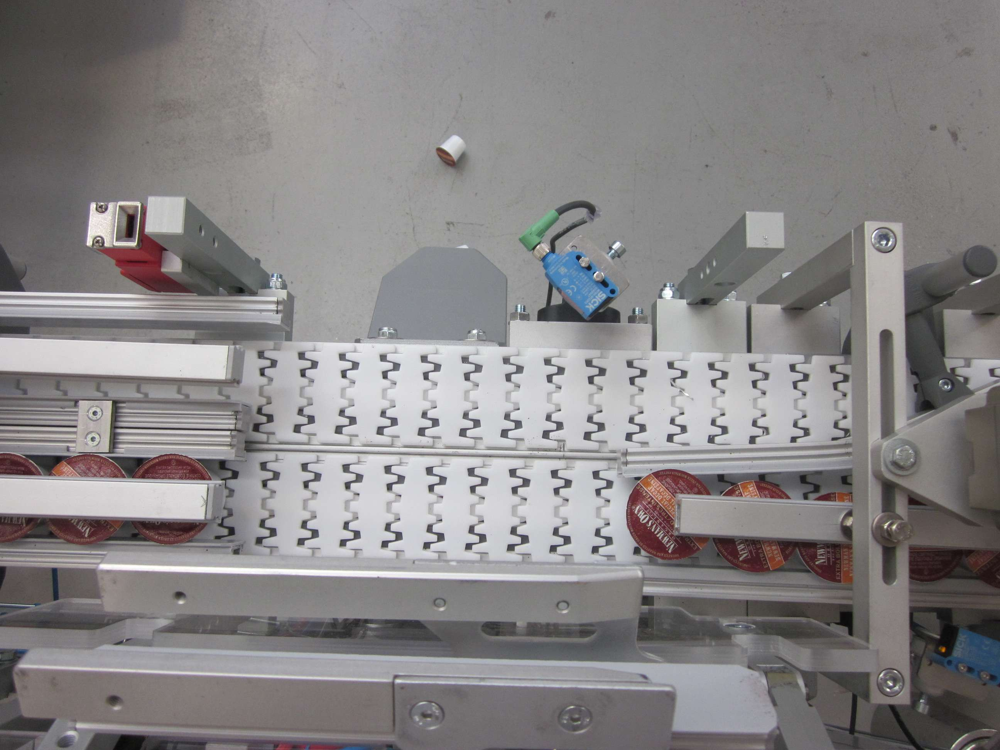

Codice interno: TR-INCL-01

I trasportatori inclinati o a Z permettono di superare dislivelli mantenendo un flusso continuo di prodotto. Possono essere equipaggiati con tacchetti, bordi di contenimento e nastri modulari per garantire stabilità anche su pendenze elevate.
Progettiamo trasportatori inclinati su misura.
Contattaci